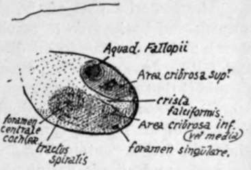
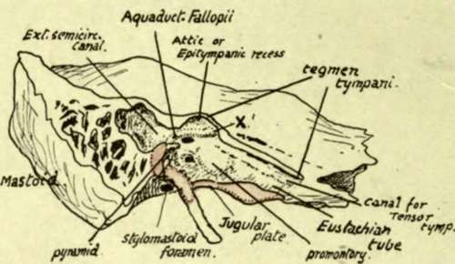

Temporal. Part 4
Description
This section is from the book "The Anatomy Of The Human Skeleton", by J. Ernest Frazer. Also available from Amazon: The anatomy of the human skeleton.
Temporal. Part 4
This embedded portion is termed the tympano-hyal, the bony process is the stylo-hyal, the ligament the epi-hyal, and the lesser cornu and upper part of body of hyoid are the ceralo-hyal and basi-hyal respectively ; these are all modifications of the bar of the second visceral arch in continuity.
The Stylo-pharyngeus arises from the inner side of the base of the process- therefore in relation with the internal jugular vein ; the Stylohyoid arises from its posterior aspect about half-way down, and the Stylo-glossus from its tip and from the Stylohyoid ligament. The process with its muscles and ligament constitute a mass of tissues passing with a general direction downwards, forwards and inwards and consequently (Fig. 205) lying in antero-lateral relation to the carotid sheath, a fact that can be at once appreciated on looking at the skull.
Fig. 177.-Plan of fundus of right internal auditory meatus. This is divided by a " crista falci-formis " into upper and lower areas. The upper area has an opening for the seventh nerve in front, and others behind for nerves to the upper and outer semicircular canals and utricle ; in the lower part are foramina for cochlear nerves in front, and for nerves to saccule and posterior canal (foramen singulare) behind. The fundus may be barely visible, or, as in the specimen from which this was drawn, may be seen without much trouble.
The glenoid fossa is the deep hollow that lies in front of the bony outer meatus. It is crossed by the Glaserian fissure, and can be divided into a mandibidar or articular part in front of this fissure, and made by the squama, and a posterior or non-articular part composed of the tympanic plate. The articular part is the deepest portion of the whole fossa, concave in all directions and longer from side to side : its long axis, however, is not quite transverse, but slightly oblique. It is bounded in front by the eminentia articularis, which forms the anterior root of the zygoma and is convex from before backwards and very slightly concave from side to side : the articular surface is carried forward with its cartilaginous lining on to the eminence, for the play of the meniscus in the joint, and thin capsular fibres are attached round the articular surface. The nerve to the Masseter runs out under the anterior margin of the eminence in contact with the anterior capsular fibres * (see Fig. 182).
The posterior part of the glenoid fossa, formed by the tympanic plate, extends inwards and backwards to reach the styloid process and the situation of the carotid sheath : it is concave in all directions, the bony plate looking forwards, downwards and outwards, and contains some fibro-fatty tissue, or some upper lobules of the parotid if that gland is large.
The Glaserian fissure is double in its inner part owing to the appearance in it of the edge of the tegmen tympani: in this part between the tegmen and the tympanic plate, the fissure contains the process gracilis of the malleus (with its inferior Meckelian ligament), and affords passage to the chorda tympani and the tympanic branch of the internal maxillary artery. The canal of exit of the nerve, termed sometimes the canal of Huguier, is near the inner end of the fissure and practically marks the spot where Meckel's cartilage lay before its disappearance (see Fig. 172).
The external auditory meatus is a bony canal running inwards and very slightly forwards, about three-fifths of an inch long, and continuous with the tympanic cavity in the dry bone, but separated from it really by the membrana tympani. The opening and canal are oval on section with the long axis nearly vertical. Its front and lower walls are formed by the tympanic plate, its back wall by this plate fused with the mastoid downgrowth of the squama, and its roof by the lower surface of the squama. The cartilaginous pinna is fastened round the margins of the orifice.
The squamous part of the bone makes with its lower surface the roof of the meatus, the articular cavity, and the articular eminence : these have been already examined. Above these it forms a thin bony plate that is seen on the side of the skull. The concave cerebral surface of this plate is marked by cerebral gyri, crossed by grooves for middle meningeal vessels, and ends below by turning in to meet the petrous at the petrosquamous suture.
The outer surface, slightly convex where it helps to form the temporal fossa, is smooth for origin\of Temporal muscle fibres : this part is separated below and behind by the posterior or ascending root of the zygoma from a slightly concave part of the squama drawnjaown on the mastoid process (Fig. 175).
The zygomatic process springs from the lower part of the outer surface of the squama : it has upper and lower borders and articulates at its extremity, which is serrated, with the malar. The inner surface is smooth and lies on the Temporal muscle, and is continuous behind with the outer surface of the squama by a widened and obliquely-sloped area over which the posterior margin of the Temporal tendon plays. The Masseter arises from its lower border and by muscular fibres from its inner surface. The process has a broad basis of attachment to the squama, which exhibits three so-called " roots " : anterior (articular eminence), middle (post-glenoid tubercle) and posterior or ascending (supramastoid crest) (Fig. 175).
* For description of joint, see under " Lower Jaw".
Fig. 178.-A diagrammatic sketch showing the outer side of the petrous bone after removal of the squama and the tympanic plate : the area over which the plate lies against the petrous is coloured pink, whereas the area of petro-squamous junction is shown uncoloured. The meeting of the tympanic plate with the jugular plate of the petrous bone makes the iloor of the tympanic cavity which the removal of the superficial bones has exposed, and the tympanic plate also forms the floor of the bony outer part of the Eustachian tube. The inner wall of the tympanum forms the outer covering of the inner ear ; the first turn of the cochlea makes an elevation, the promontory, on the front part of the wall, the vestibule is situated behind this and has the fenestra associated with it, and the semicircular canals, which constitute the hinder part of the inner ear, cause a slight prominence {external canal) in the aditus which leads from the tympanum to the mastoid antrum. The seventh nerve runs out behind and above the cochlea, and thus comes to the inner wall above and behind (X.) the promontory : here the " Fallopian aqueduct," the bony canal which contains the nerve, turns back along the inner wall, above the fenestra ovalis, to reach the posterior wall, down which it turns to end at the stylomastoid foramen. The relative position of the facial nerve and the various parts of the inner ear. as seen in the tympanum, is also illustrated in the arrangement of foramina in the floor of the internal auditory meatus (Fig. 177).
Continue to: